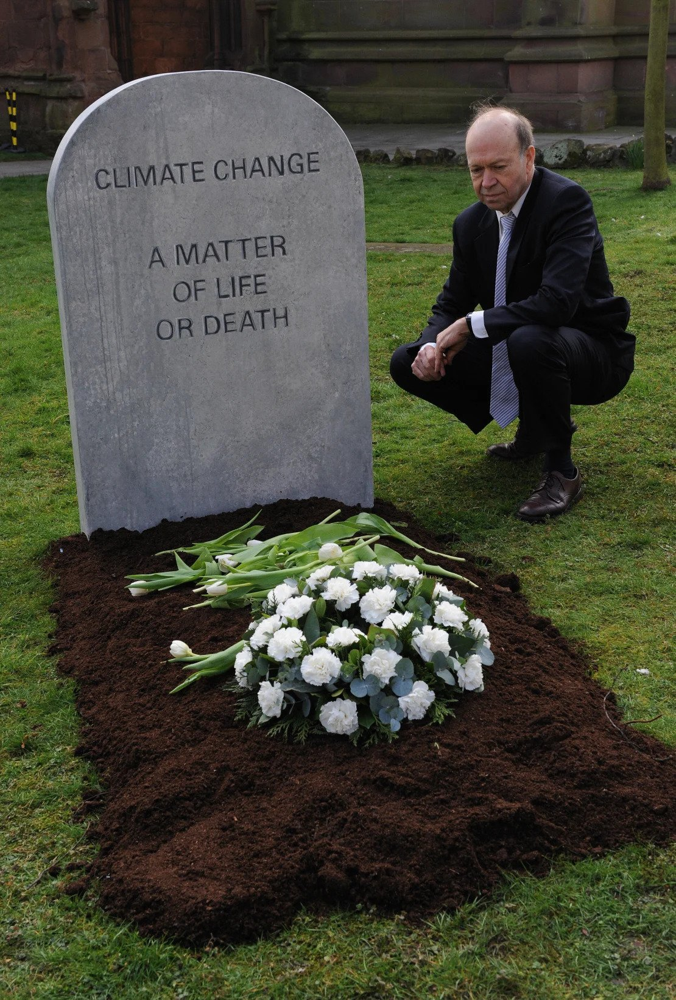

The planet is on track to heat up at a much faster rate than scientists have previously predicted, meaning a key global warming threshold could be breached this decade, according to a new study co-authored by James Hansen — the US scientist widely credited with being the first to publicly sound the alarm on the climate crisis in the 1980s.
In the paper, published Thursday in the journal Oxford Open Climate Change, Hansen and more than a dozen other scientists used a combination of paleoclimate data, including data from polar ice cores and tree rings, climate models and observational data, to conclude that the Earth is much more sensitive to climate change than previously understood.
“We are in the early phase of a climate emergency,” according to the report, which warns a surge of heat “already in the pipeline” will rapidly push global temperatures beyond what has been predicted, resulting in warming that exceeds 1.5 degrees Celsius above pre-industrial levels in the 2020s, and above 2 degrees Celsius before 2050.
The findings add to a slew of recent research that concludes the world is hurtling toward 1.5 degrees, a threshold beyond which the impacts of climate change — including extreme heat, drought and floods — will become significantly harder for humans to adapt to.
“The 1.5-degree limit is deader than a doornail,” said Hansen on a call with reporters. “And the 2-degree limit can be rescued, only with the help of purposeful actions.”
Some other scientists, however, have cast doubt on the paper’s conclusions that climate change is accelerating faster than models predict.
Hansen, a director at the Earth Institute at Columbia University, is a renowned climate scientist whose 1988 testimony to the US Senate first brought global attention to climate change.
He has previously warned that the Earth has an energy imbalance, as more energy comes in through sunlight than leaves through heat radiating into space.